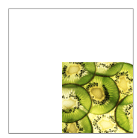
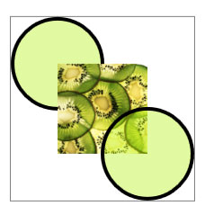
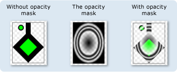
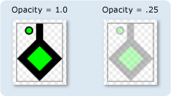
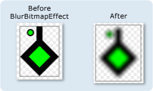
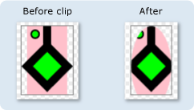
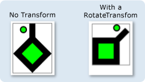
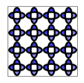

Обзор объектов Drawing
В данном разделе представлены Drawing объектов и описывает их использование для эффективного рисования фигур, точечных рисунков, текста и мультимедиа. Используйте Drawing объектов при создании коллекции картинок, рисовании с помощью DrawingBrush, или использовать Visual объектов.
Что такое объект-рисунок?
Объект Drawing объект описывает отображаемое содержимое, например фигуру, растровое изображение, видео или строку текста. Различные типы рисунков описывают различные типы содержимого. Ниже приведен список различных типов объектов-рисунков.
GeometryDrawing — Выводит фигуру.
ImageDrawing — Выводит изображение.
GlyphRunDrawing — Выводит текст.
VideoDrawing — Воспроизводит аудио-или видео.
DrawingGroup — Выводит другие рисунки. Для объединения рисунков в один составной используйте группирование рисунков.
Drawing объекты являются универсальными. Существует много способов, которые можно использовать Drawing объекта.
Можно отобразить его как изображение с помощью DrawingImage и Image элемента управления.
Вы можете использовать его с DrawingBrush для рисования объекта, такие как Background из Page.
Его можно использовать для описания внешнего вида DrawingVisual.
Его можно использовать для перечисления содержимого Visual.
WPF предоставляет другие типы объектов, которые поддерживают рисование фигур, растровых изображений, текста и мультимедиа. Например, можно также использовать Shape объектов для рисования фигур и MediaElement управления предоставляют еще один способ добавить видео в приложение. Поэтому когда следует использовать Drawing объектов? Когда можно пожертвовать возможностями уровня среды ради улучшения производительности или при необходимости Freezable функции. Так как Drawing объектов не поддерживают макета, ввод и режим фокусировки, они обеспечивают выигрыш в производительности, делает их идеальными для описания фона, коллекций картинок и низкоуровневых рисунков с Visual объектов.
Так как они представляют собой тип Freezable объекта, Drawing объекты получают некоторые специальные особенности, которые включают следующие: они могут объявляться как ресурсы, общие для нескольких объектов, делать доступными только для чтения с целью повышения производительности, клонировать и делать потокобезопасными. Дополнительные сведения о различных возможностях, предоставляемых Freezable объектов, см. в разделе Freezable Общие сведения об объектах.
Рисование фигуры
Чтобы нарисовать фигуру, используйте GeometryDrawing. Прорисовки Geometry свойство описывает форму, его Brush свойство описывает закрашивание внутренней части фигуры и его Pen свойство описывает, как должно отображаться его контура.
В следующем примере используется GeometryDrawing для рисования фигуры. Фигура описывается GeometryGroup и два EllipseGeometry объектов. Фигуры закрашивается кистью LinearGradientBrush и ее контур рисуется пером Black Pen.
В этом примере создаются следующие GeometryDrawing.

Объект GeometryDrawing
//
// Create the Geometry to draw.
//
GeometryGroup ellipses = new GeometryGroup();
ellipses.Children.Add(
new EllipseGeometry(new Point(50,50), 45, 20)
);
ellipses.Children.Add(
new EllipseGeometry(new Point(50, 50), 20, 45)
);
//
// Create a GeometryDrawing.
//
GeometryDrawing aGeometryDrawing = new GeometryDrawing();
aGeometryDrawing.Geometry = ellipses;
// Paint the drawing with a gradient.
aGeometryDrawing.Brush =
new LinearGradientBrush(
Colors.Blue,
Color.FromRgb(204,204,255),
new Point(0,0),
new Point(1,1));
// Outline the drawing with a solid color.
aGeometryDrawing.Pen = new Pen(Brushes.Black, 10);
<GeometryDrawing>
<GeometryDrawing.Geometry>
<!-- Create a composite shape. -->
<GeometryGroup>
<EllipseGeometry Center="50,50" RadiusX="45" RadiusY="20" />
<EllipseGeometry Center="50,50" RadiusX="20" RadiusY="45" />
</GeometryGroup>
</GeometryDrawing.Geometry>
<GeometryDrawing.Brush>
<!-- Paint the drawing with a gradient. -->
<LinearGradientBrush>
<GradientStop Offset="0.0" Color="Blue" />
<GradientStop Offset="1.0" Color="#CCCCFF" />
</LinearGradientBrush>
</GeometryDrawing.Brush>
<GeometryDrawing.Pen>
<!-- Outline the drawing with a solid color. -->
<Pen Thickness="10" Brush="Black" />
</GeometryDrawing.Pen>
</GeometryDrawing>
Полный пример см. в разделе Создание GeometryDrawing.
Другие Geometry классов, таких как PathGeometry позволяют создавать более сложные фигуры, кривых и дуг. Дополнительные сведения о Geometry объектов, см. в разделе Общие сведения о геометрии.
Дополнительные сведения о других способах рисования фигур, которые не используют Drawing объектов, см. в разделе фигур и базовых средств рисования в WPF Обзор.
Рисование изображения
Для рисования изображения, следует использовать ImageDrawing. ImageDrawing Объекта ImageSource свойство описывает изображения для рисования и его Rect свойство определяет область, где рисуется изображение.
В следующем примере изображение рисуется в прямоугольнике, расположенном в точке (75,75) и имеющем размер 100 на 100 пикселей. На следующем рисунке показано ImageDrawing созданный в примере. Серая рамка был добавлен, чтобы показать границы ImageDrawing.

ImageDrawing размером 100 на 100
// Create a 100 by 100 image with an upper-left point of (75,75).
ImageDrawing bigKiwi = new ImageDrawing();
bigKiwi.Rect = new Rect(75, 75, 100, 100);
bigKiwi.ImageSource = new BitmapImage(
new Uri(@"sampleImages\kiwi.png", UriKind.Relative));
<!-- The Rect property specifies that the image only fill a 100 by 100
rectangular area. -->
<ImageDrawing Rect="75,75,100,100" ImageSource="sampleImages\kiwi.png"/>
Дополнительную информацию об изображениях см. в разделе Общие сведения об изображениях.
Воспроизведение мультимедиа (только код)
Note
Несмотря на то, что можно объявить VideoDrawing в XAML, вы можете только загружать и воспроизводить соответствующие мультимедиа с помощью кода. Чтобы воспроизвести видео в XAML, используйте MediaElement вместо этого.
Для воспроизведения аудио-или видео, используйте VideoDrawing и MediaPlayer. Есть два способа загрузки и воспроизведения мультимедиа. Первый заключается в использовании MediaPlayer и VideoDrawing , а второй способ состоит в создании собственных MediaTimeline для использования с MediaPlayer и VideoDrawing.
Note
При распространении мультимедиа с приложением, в отличие от изображений, файл мультимедиа нельзя использовать как ресурс проекта. Вместо этого в файле проекта необходимо выбрать тип мультимедиа Content и задать для CopyToOutputDirectory значение PreserveNewest или Always.
Для воспроизведения файлов мультимедиа без создания собственной MediaTimeline, выполните следующие действия.
Создание объекта MediaPlayer.
MediaPlayer player = new MediaPlayer();Используйте Open метод для загрузки файла мультимедиа.
player.Open(new Uri(@"sampleMedia\xbox.wmv", UriKind.Relative));Создайте таблицу VideoDrawing.
VideoDrawing aVideoDrawing = new VideoDrawing();Укажите размер и расположение для отображения мультимедиа, задав Rect свойство VideoDrawing.
aVideoDrawing.Rect = new Rect(0, 0, 100, 100);Задайте Player свойство VideoDrawing с MediaPlayer был создан.
aVideoDrawing.Player = player;Используйте Play метод MediaPlayer для начала воспроизведения мультимедиа.
// Play the video once. player.Play();
В следующем примере используется VideoDrawing и MediaPlayer для однократного воспроизведения видеофайла.
//
// Create a VideoDrawing.
//
MediaPlayer player = new MediaPlayer();
player.Open(new Uri(@"sampleMedia\xbox.wmv", UriKind.Relative));
VideoDrawing aVideoDrawing = new VideoDrawing();
aVideoDrawing.Rect = new Rect(0, 0, 100, 100);
aVideoDrawing.Player = player;
// Play the video once.
player.Play();
Чтобы получить дополнительное управление временем для мультимедиа, используйте MediaTimeline с MediaPlayer и VideoDrawing объектов. MediaTimeline Позволяет указать, следует ли повторять видео. Чтобы использовать MediaTimeline с VideoDrawing, выполните следующие действия:
Объявите MediaTimeline и задайте ее временные характеристики.
// Create a MediaTimeline. MediaTimeline mTimeline = new MediaTimeline(new Uri(@"sampleMedia\xbox.wmv", UriKind.Relative)); // Set the timeline to repeat. mTimeline.RepeatBehavior = RepeatBehavior.Forever;Создание MediaClock из MediaTimeline.
// Create a clock from the MediaTimeline. MediaClock mClock = mTimeline.CreateClock();Создание MediaPlayer и использовать MediaClock присвоить его Clock свойство.
MediaPlayer repeatingVideoDrawingPlayer = new MediaPlayer(); repeatingVideoDrawingPlayer.Clock = mClock;Создание VideoDrawing и назначить MediaPlayer для Player свойство VideoDrawing.
VideoDrawing repeatingVideoDrawing = new VideoDrawing(); repeatingVideoDrawing.Rect = new Rect(150, 0, 100, 100); repeatingVideoDrawing.Player = repeatingVideoDrawingPlayer;
В следующем примере используется MediaTimeline с MediaPlayer и VideoDrawing для воспроизведения видео.
//
// Create a VideoDrawing that repeats.
//
// Create a MediaTimeline.
MediaTimeline mTimeline =
new MediaTimeline(new Uri(@"sampleMedia\xbox.wmv", UriKind.Relative));
// Set the timeline to repeat.
mTimeline.RepeatBehavior = RepeatBehavior.Forever;
// Create a clock from the MediaTimeline.
MediaClock mClock = mTimeline.CreateClock();
MediaPlayer repeatingVideoDrawingPlayer = new MediaPlayer();
repeatingVideoDrawingPlayer.Clock = mClock;
VideoDrawing repeatingVideoDrawing = new VideoDrawing();
repeatingVideoDrawing.Rect = new Rect(150, 0, 100, 100);
repeatingVideoDrawing.Player = repeatingVideoDrawingPlayer;
Обратите внимание, что при использовании MediaTimeline, интерактивный ClockController возвращаемые Controller свойство MediaClock для управления воспроизведением мультимедиа, а не интерактивные методы MediaPlayer.
Рисование текста
Для рисования текста, следует использовать GlyphRunDrawing и GlyphRun. В следующем примере используется GlyphRunDrawing для рисования текста «Hello, World!».
GlyphRun theGlyphRun = new GlyphRun(
new GlyphTypeface(new Uri(@"C:\WINDOWS\Fonts\TIMES.TTF")),
0,
false,
13.333333333333334,
new ushort[]{43, 72, 79, 79, 82, 3, 58, 82, 85, 79, 71},
new Point(0, 12.29),
new double[]{
9.62666666666667, 7.41333333333333, 2.96,
2.96, 7.41333333333333, 3.70666666666667,
12.5866666666667, 7.41333333333333,
4.44, 2.96, 7.41333333333333},
null,
null,
null,
null,
null,
null
);
GlyphRunDrawing gDrawing = new GlyphRunDrawing(Brushes.Black, theGlyphRun);
<GlyphRunDrawing ForegroundBrush="Black">
<GlyphRunDrawing.GlyphRun>
<GlyphRun
CaretStops="{x:Null}"
ClusterMap="{x:Null}"
IsSideways="False"
GlyphOffsets="{x:Null}"
GlyphIndices="43 72 79 79 82 3 58 82 85 79 71"
BaselineOrigin="0,12.29"
FontRenderingEmSize="13.333333333333334"
DeviceFontName="{x:Null}"
AdvanceWidths="9.62666666666667 7.41333333333333 2.96 2.96 7.41333333333333 3.70666666666667 12.5866666666667 7.41333333333333 4.44 2.96 7.41333333333333"
BidiLevel="0">
<GlyphRun.GlyphTypeface>
<GlyphTypeface FontUri="C:\WINDOWS\Fonts\TIMES.TTF" />
</GlyphRun.GlyphTypeface>
</GlyphRun>
</GlyphRunDrawing.GlyphRun>
</GlyphRunDrawing>
Объект GlyphRun — это низкоуровневый объект, предназначенный для использования с представления документов фиксированного формата и сценариев печати. Рисование текста на экран является простым способом является использование Label или TextBlock. Дополнительные сведения о GlyphRun, см. в разделе Знакомство с объектом GlyphRun и элементом Glyphs Обзор.
Составные рисунки
Объект DrawingGroup позволяет объединить несколько рисунков в один составной рисунок. С помощью DrawingGroup, фигуры, изображения и текст можно объединить в единую Drawing объекта.
В следующем примере используется DrawingGroup сочетание двух GeometryDrawing объектов и ImageDrawing объекта. В этом примере формируются следующие данные:

Составной рисунок
//
// Create three drawings.
//
GeometryDrawing ellipseDrawing =
new GeometryDrawing(
new SolidColorBrush(Color.FromArgb(102, 181, 243, 20)),
new Pen(Brushes.Black, 4),
new EllipseGeometry(new Point(50,50), 50, 50)
);
ImageDrawing kiwiPictureDrawing =
new ImageDrawing(
new BitmapImage(new Uri(@"sampleImages\kiwi.png", UriKind.Relative)),
new Rect(50,50,100,100));
GeometryDrawing ellipseDrawing2 =
new GeometryDrawing(
new SolidColorBrush(Color.FromArgb(102,181,243,20)),
new Pen(Brushes.Black, 4),
new EllipseGeometry(new Point(150, 150), 50, 50)
);
// Create a DrawingGroup to contain the drawings.
DrawingGroup aDrawingGroup = new DrawingGroup();
aDrawingGroup.Children.Add(ellipseDrawing);
aDrawingGroup.Children.Add(kiwiPictureDrawing);
aDrawingGroup.Children.Add(ellipseDrawing2);
<DrawingGroup>
<GeometryDrawing Brush="#66B5F314">
<GeometryDrawing.Geometry>
<EllipseGeometry Center="50,50" RadiusX="50" RadiusY="50"/>
</GeometryDrawing.Geometry>
<GeometryDrawing.Pen>
<Pen Brush="Black" Thickness="4" />
</GeometryDrawing.Pen>
</GeometryDrawing>
<ImageDrawing ImageSource="sampleImages\kiwi.png" Rect="50,50,100,100"/>
<GeometryDrawing Brush="#66B5F314">
<GeometryDrawing.Geometry>
<EllipseGeometry Center="150,150" RadiusX="50" RadiusY="50"/>
</GeometryDrawing.Geometry>
<GeometryDrawing.Pen>
<Pen Brush="Black" Thickness="4" />
</GeometryDrawing.Pen>
</GeometryDrawing>
</DrawingGroup>
Объект DrawingGroup также позволяет применить к его содержимому маски непрозрачности, преобразования, эффекты для точечных рисунков и другие операции. DrawingGroup операции применяются в следующем порядке: OpacityMask, Opacity, BitmapEffect, ClipGeometry, GuidelineSet, а затем Transform.
Ниже показан порядок, в котором DrawingGroup применяются операции.

Порядок операций для DrawingGroup
В следующей таблице описаны свойства, можно использовать для управления DrawingGroup содержимое объекта.
| Свойство | Описание | Рисунки |
|---|---|---|
| OpacityMask | Изменяет прозрачность выбранных частей DrawingGroup содержимое. Пример см. в статье Практическое руководство. Управление прозрачностью рисунка. |  |
| Opacity | Однородно изменяет прозрачность DrawingGroup содержимое. Это свойство используется, чтобы сделать Drawing прозрачным или полупрозрачным. Пример см. в статье Практическое руководство. Применение маски непрозрачности к рисунку. |  |
| BitmapEffect | Применяет BitmapEffect для DrawingGroup содержимое. Пример см. в статье Практическое руководство. Применение BitmapEffect к рисунку. |  |
| ClipGeometry | Клипов DrawingGroup содержимое области, заданной с помощью Geometry. Пример см. в статье Практическое руководство. Обрезка рисунка . |  |
| GuidelineSet | Привязывает аппаратно-независимые пиксели к пикселям устройства, следуя указанным правилам. Это свойство полезно для обеспечения резкой отрисовки высокодетализированной графики на дисплеях с низким разрешением. Пример см. в разделе Применение GuidelineSet к рисунку. |  |
| Transform | Преобразует DrawingGroup содержимое. Пример см. в статье Практическое руководство. Применение преобразования к рисунку. |  |
Отображение рисунка в виде изображения
Для отображения Drawing с Image управления, используйте DrawingImage как Image элемента управления Source и задайте DrawingImage объекта DrawingImage.Drawing свойства в документе, вы хотите отобразить.
В следующем примере используется DrawingImage и Image управления для отображения GeometryDrawing. В этом примере формируются следующие данные:
Объект DrawingImage
using System;
using System.Windows;
using System.Windows.Controls;
using System.Windows.Media;
using System.Windows.Media.Animation;
using System.Windows.Shapes;
namespace SDKSample
{
public class DrawingImageExample : Page
{
public DrawingImageExample()
{
//
// Create the Geometry to draw.
//
GeometryGroup ellipses = new GeometryGroup();
ellipses.Children.Add(
new EllipseGeometry(new Point(50,50), 45, 20)
);
ellipses.Children.Add(
new EllipseGeometry(new Point(50, 50), 20, 45)
);
//
// Create a GeometryDrawing.
//
GeometryDrawing aGeometryDrawing = new GeometryDrawing();
aGeometryDrawing.Geometry = ellipses;
// Paint the drawing with a gradient.
aGeometryDrawing.Brush =
new LinearGradientBrush(
Colors.Blue,
Color.FromRgb(204,204,255),
new Point(0,0),
new Point(1,1));
// Outline the drawing with a solid color.
aGeometryDrawing.Pen = new Pen(Brushes.Black, 10);
//
// Use a DrawingImage and an Image control
// to display the drawing.
//
DrawingImage geometryImage = new DrawingImage(aGeometryDrawing);
// Freeze the DrawingImage for performance benefits.
geometryImage.Freeze();
Image anImage = new Image();
anImage.Source = geometryImage;
anImage.HorizontalAlignment = HorizontalAlignment.Left;
//
// Place the image inside a border and
// add it to the page.
//
Border exampleBorder = new Border();
exampleBorder.Child = anImage;
exampleBorder.BorderBrush = Brushes.Gray;
exampleBorder.BorderThickness = new Thickness(1);
exampleBorder.HorizontalAlignment = HorizontalAlignment.Left;
exampleBorder.VerticalAlignment = VerticalAlignment.Top;
exampleBorder.Margin = new Thickness(10);
this.Margin = new Thickness(20);
this.Background = Brushes.White;
this.Content = exampleBorder;
}
}
}
<Page
xmlns="http://schemas.microsoft.com/winfx/2006/xaml/presentation"
xmlns:x="http://schemas.microsoft.com/winfx/2006/xaml"
xmlns:PresentationOptions="http://schemas.microsoft.com/winfx/2006/xaml/presentation/options"
xmlns:mc="http://schemas.openxmlformats.org/markup-compatibility/2006"
mc:Ignorable="PresentationOptions"
Background="White" Margin="20">
<Border BorderBrush="Gray" BorderThickness="1"
HorizontalAlignment="Left" VerticalAlignment="Top"
Margin="10">
<!-- This image uses a Drawing object for its source. -->
<Image>
<Image.Source>
<DrawingImage PresentationOptions:Freeze="True">
<DrawingImage.Drawing>
<GeometryDrawing>
<GeometryDrawing.Geometry>
<GeometryGroup>
<EllipseGeometry Center="50,50" RadiusX="45" RadiusY="20" />
<EllipseGeometry Center="50,50" RadiusX="20" RadiusY="45" />
</GeometryGroup>
</GeometryDrawing.Geometry>
<GeometryDrawing.Brush>
<LinearGradientBrush>
<GradientStop Offset="0.0" Color="Blue" />
<GradientStop Offset="1.0" Color="#CCCCFF" />
</LinearGradientBrush>
</GeometryDrawing.Brush>
<GeometryDrawing.Pen>
<Pen Thickness="10" Brush="Black" />
</GeometryDrawing.Pen>
</GeometryDrawing>
</DrawingImage.Drawing>
</DrawingImage>
</Image.Source>
</Image>
</Border>
</Page>
Заполнение объекта с помощью рисунка
Объект DrawingBrush — это тип кисти, которая закрашивает область объектом-рисунком. Этот объект можно использовать для закраски практически любого графического объекта с помощью рисунка. Drawing Свойство DrawingBrush описывает его Drawing. Для подготовки к просмотру Drawing с DrawingBrush, добавьте его к кисти с использованием кисти Drawing свойства и используйте кисть для закраски графического объекта, такого как элемент управления или панели.
В следующих примерах используется DrawingBrush для закрашивания Fill из Rectangle шаблоном, созданным из GeometryDrawing. В этом примере формируются следующие данные:

GeometryDrawing с DrawingBrush
using System;
using System.Windows;
using System.Windows.Controls;
using System.Windows.Media;
using System.Windows.Media.Animation;
using System.Windows.Shapes;
namespace SDKSample
{
public class DrawingBrushExample : Page
{
public DrawingBrushExample()
{
//
// Create the Geometry to draw.
//
GeometryGroup ellipses = new GeometryGroup();
ellipses.Children.Add(
new EllipseGeometry(new Point(50,50), 45, 20)
);
ellipses.Children.Add(
new EllipseGeometry(new Point(50, 50), 20, 45)
);
//
// Create a GeometryDrawing.
//
GeometryDrawing aGeometryDrawing = new GeometryDrawing();
aGeometryDrawing.Geometry = ellipses;
// Paint the drawing with a gradient.
aGeometryDrawing.Brush =
new LinearGradientBrush(
Colors.Blue,
Color.FromRgb(204,204,255),
new Point(0,0),
new Point(1,1));
// Outline the drawing with a solid color.
aGeometryDrawing.Pen = new Pen(Brushes.Black, 10);
DrawingBrush patternBrush = new DrawingBrush(aGeometryDrawing);
patternBrush.Viewport = new Rect(0, 0, 0.25, 0.25);
patternBrush.TileMode = TileMode.Tile;
patternBrush.Freeze();
//
// Create an object to paint.
//
Rectangle paintedRectangle = new Rectangle();
paintedRectangle.Width = 100;
paintedRectangle.Height = 100;
paintedRectangle.Fill = patternBrush;
//
// Place the image inside a border and
// add it to the page.
//
Border exampleBorder = new Border();
exampleBorder.Child = paintedRectangle;
exampleBorder.BorderBrush = Brushes.Gray;
exampleBorder.BorderThickness = new Thickness(1);
exampleBorder.HorizontalAlignment = HorizontalAlignment.Left;
exampleBorder.VerticalAlignment = VerticalAlignment.Top;
exampleBorder.Margin = new Thickness(10);
this.Margin = new Thickness(20);
this.Background = Brushes.White;
this.Content = exampleBorder;
}
}
}
<Page
xmlns="http://schemas.microsoft.com/winfx/2006/xaml/presentation"
xmlns:x="http://schemas.microsoft.com/winfx/2006/xaml"
xmlns:PresentationOptions="http://schemas.microsoft.com/winfx/2006/xaml/presentation/options"
xmlns:mc="http://schemas.openxmlformats.org/markup-compatibility/2006"
mc:Ignorable="PresentationOptions"
Margin="20" Background="White">
<Border BorderBrush="Gray" BorderThickness="1"
HorizontalAlignment="Left" VerticalAlignment="Top"
Margin="10">
<Rectangle Width="100" Height="100">
<Rectangle.Fill>
<DrawingBrush PresentationOptions:Freeze="True"
Viewport="0,0,0.25,0.25" TileMode="Tile">
<DrawingBrush.Drawing>
<GeometryDrawing>
<GeometryDrawing.Geometry>
<GeometryGroup>
<EllipseGeometry Center="50,50" RadiusX="45" RadiusY="20" />
<EllipseGeometry Center="50,50" RadiusX="20" RadiusY="45" />
</GeometryGroup>
</GeometryDrawing.Geometry>
<GeometryDrawing.Brush>
<LinearGradientBrush>
<GradientStop Offset="0.0" Color="Blue" />
<GradientStop Offset="1.0" Color="#CCCCFF" />
</LinearGradientBrush>
</GeometryDrawing.Brush>
<GeometryDrawing.Pen>
<Pen Thickness="10" Brush="Black" />
</GeometryDrawing.Pen>
</GeometryDrawing>
</DrawingBrush.Drawing>
</DrawingBrush>
</Rectangle.Fill>
</Rectangle>
</Border>
</Page>
DrawingBrush Класс предоставляет разнообразные варианты растягивания и мозаичного заполнения своего содержимого. Дополнительные сведения о DrawingBrush, см. в разделе Рисование с помощью изображений, рисунков и визуальных элементов Обзор.
Рисование с помощью объектов Visual
Объект DrawingVisual — это тип визуального объекта, предназначенного для отрисовки рисунка. Работа непосредственно на визуальном уровне является инструментом для разработчиков, которым требуется построить настраиваемую графическую среду, и не описывается в этом обзоре. Дополнительные сведения см. в разделе Использование объектов DrawingVisual.
Объекты DrawingContext
DrawingContext Позволяет заполнить Visual или Drawing визуальным содержимым. Многие такие низкоуровневые графические объекты используют DrawingContext так, как он описывает графическое содержимое очень эффективно.
Несмотря на то что DrawingContext методы рисования выглядеть методы рисования System.Drawing.Graphics типа, они фактически сильно отличаются. DrawingContext — используется с графической системой сохраненного режима, а System.Drawing.Graphics тип используется с графической системой непосредственного режима. При использовании DrawingContext команд рисования объекта, фактически сохраняется набор инструкций отрисовки (хотя фактический механизм сохранения зависит от типа объекта, предоставляющего DrawingContext), будет использоваться позже по графику системы; не выполняется рисование на экране в режиме реального времени. Дополнительные сведения о том, как работает графическая система Windows Presentation Foundation (WPF), см. в разделе Обзор отрисовки графики WPF.
Вы никогда непосредственно не создаете экземпляр DrawingContext, однако можете получить контекст рисования с помощью определенных методов, например DrawingGroup.Open и DrawingVisual.RenderOpen.
Перечисление содержимого визуального элемента
Наряду с другими своими возможностями, объекты Drawing также предоставляют объектную модель для перечисления содержимого Visual.
В следующем примере метод GetDrawing используется для извлечения значения DrawingGroup из Visual и перечисления содержимого группы.
public void RetrieveDrawing(Visual v)
{
DrawingGroup drawingGroup = VisualTreeHelper.GetDrawing(v);
EnumDrawingGroup(drawingGroup);
}
// Enumerate the drawings in the DrawingGroup.
public void EnumDrawingGroup(DrawingGroup drawingGroup)
{
DrawingCollection dc = drawingGroup.Children;
// Enumerate the drawings in the DrawingCollection.
foreach (Drawing drawing in dc)
{
// If the drawing is a DrawingGroup, call the function recursively.
if (drawing is DrawingGroup group)
{
EnumDrawingGroup(group);
}
else if (drawing is GeometryDrawing)
{
// Perform action based on drawing type.
}
else if (drawing is ImageDrawing)
{
// Perform action based on drawing type.
}
else if (drawing is GlyphRunDrawing)
{
// Perform action based on drawing type.
}
else if (drawing is VideoDrawing)
{
// Perform action based on drawing type.
}
}
}
См. также
- Drawing
- DrawingGroup
- Двумерная графика и изображения
- Рисование с помощью объектов Image, Drawing и Visual
- Общие сведения о классе Geometry
- Обзор фигур и базовых средств рисования в приложении WPF
- Общие сведения об отрисовке графики в WPF
- Общие сведения об объектах класса Freezable
- Практические руководства